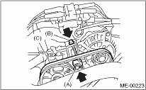

CAUTION:
Wipe off any oil and water on the belt and pulley.
1. Install the V belt, and tighten the slider bolt to obtain the specified belt tension. 
2. Tighten the lock bolt (A).
3. Tighten the slider bolt (B).
Tightening torque:
Lock bolt (A)
25 N·m (2.5 kgf-m, 18.4 ft-lb)
Slider bolt (B)
8 N·m (0.8 kgf-m, 5.8 ft-lb)

1. Install the A/C belt tensioner.
2. Install a V belt, and tighten the slider bolt (B) so as to obtain the specified belt tension.
3. Tighten the lock nut (A).
Tightening torque:
Lock nut (A)
23 N·m (2.3 kgf-m, 17.0 ft-lb)